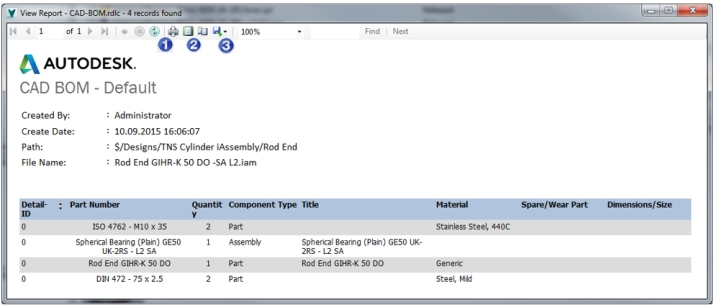
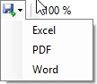
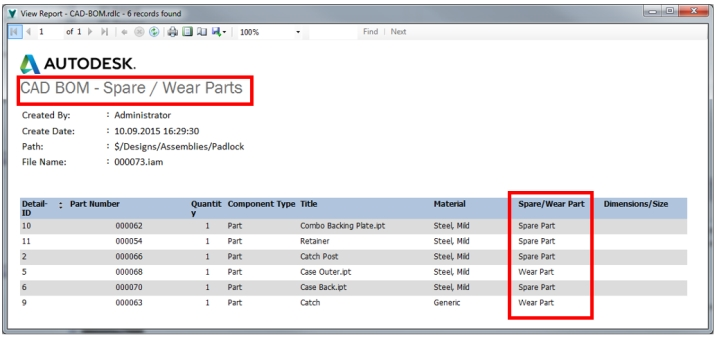
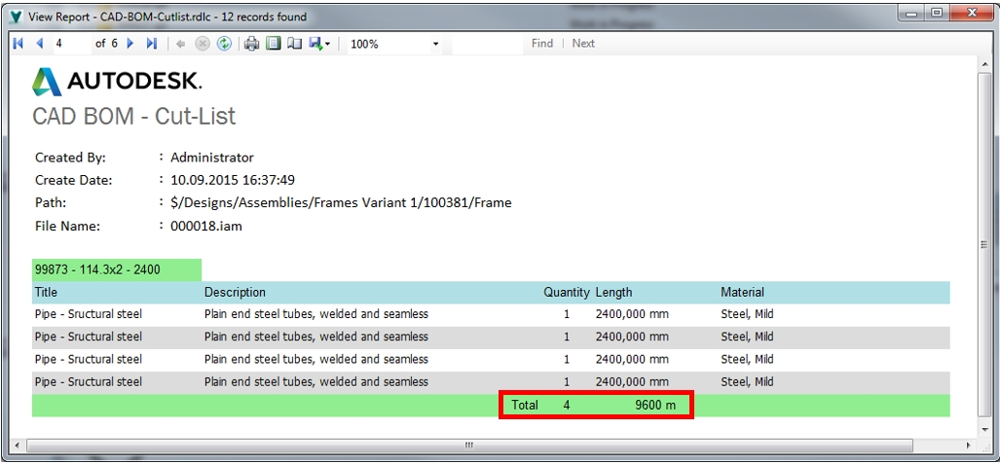

(Vault Quickstart 2015 R2)
A CAD BOM can be saved or printed on a report
template in PDF, Word or Excel.
Quick Start has included 3 templates matching the
3 filter values. Depending on the filter, the respective template
is selected.
General Example - unfiltered CAD BOM

Afdruken
Print preview
Save as -> PDF, Word, Excel 
Spare parts / Wear parts lists
Select the appropriate filter to export this type
of list. The preview shows the filtered list. Only the components
with these property values will be listed.

Cut list
The report groups the raw material by part number
/ length. The rollup of the quantity and length is made following
the combination Part number / length. Other rollup conditions can
be configured in the report templates if needed.
